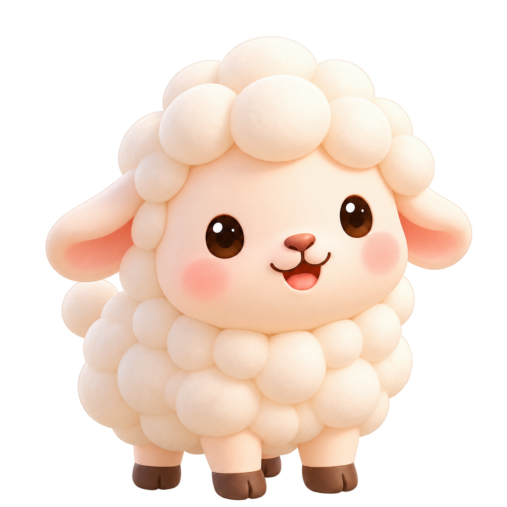
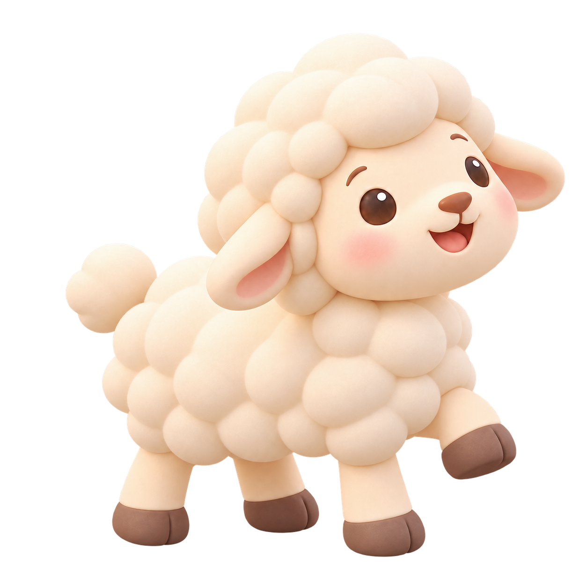

오늘의 말씀 · 선택 암송
내가 너와 함께 있어 네가 어디로 가든지 너를 지키며
창세기 28장 15절
⚔️ 나의 영적 무기

내가 외우고 싶은 성구
나의 말씀기억 ← 밀어서 더 보기
1단계 · 말씀 읽기
천천히 말씀을 읽어 보세요.
나의 목장
🌾 건초 0💎 보석 0
양을 누르면 양우리로 이동해요.
🐑 나의 양우리0마리
보관한 양을 눌러 목장에 다시 풀어둘 수 있어요.
말씀루트 계정
로그인
가입한 아이디와 비밀번호를 입력해 주세요.
말씀루트 계정
회원가입
아이디는 가입 후 목장 간판 이름으로 자동 사용됩니다.
나의 말씀 등록
기억하고 싶은 말씀을 적어 주세요.
말씀루트 · 미션
오늘의 미션
복습할 말씀과 이번 주 목표를 한곳에서 확인해 보세요.
🔔 오늘 복습할 말씀0
🎯 이번 주 미션
마이
나의 말씀 성장
🌾 건초 0💎 보석 0
나의 영적무기 상자
내가 구입한 영적 무기를 모아 볼 수 있어요.
영적 무기 50개
아래로 스크롤하며 암송으로 모은 보석으로 영적 무기를 모아 보세요.
말씀 선택부터 양과 목장까지 처음 안내를 다시 볼 수 있어요. 기존 기록은 그대로 유지됩니다.
마이 · 컬렉션
나의 양 도감
성장 양과 말씀 주제별 특별 양을 한눈에 모아 보세요.
0 / 16전체 양 도감 수집
📦 목장 아이템 보관함
총 0개보관 0개목장 0개
보관 중인 아이템의 「목장에 놓기」를 누르면 목장으로 이동합니다. 배치한 아이템은 꾸미기 모드에서 다시 보관할 수 있어요.
🛍️ 목장 아이템 상점
💎 보석 0
⚔️ 영적 무기
💎 보석 0
나의 영적무기 상자
영적 무기 50개
아래로 밀어서 50개를 모두 볼 수 있어요.
오늘의 말씀 주제
말씀 성장!
복습으로 양이 자랐어요.
🌾 +10 💎 +10
말씀과 함께
나의 목장을 키워요
말씀을 선택하고 암송하면 보상을 받아요.
양과 함께 말씀을 기억하는 여정을 시작해 보세요.
처음 한 번만 안내해 드려요.
첫 번째 말씀
어떤 말씀부터
기억해 볼까요?
주제를 고르고 마음에 드는 말씀 하나를 선택해 보세요.
말씀 암송
나에게 맞는 방법으로
말씀을 기억해요
여섯 가지 방법을 자유롭게 선택해서 연습할 수 있어요.
듣기말씀을 들으며 천천히 익혀요.
스크래치가려진 말씀을 손으로 열어 봐요.
초성초성을 단서로 말씀을 떠올려요.
단어 이동단어를 순서대로 맞춰 말씀을 만들어요.
빈 칸빠진 단어를 생각하며 말씀을 완성해요.
써보기말씀을 직접 쓰며 기억을 확인해요.
암송 보상

말씀을 기억할수록
목장도 함께 자라요
암송을 완료하면 건초와 보석을 모을 수 있어요.
📖말씀 암송
›
🌾 💎보상 받기
›
🐑목장 성장
🌾 건초💎 보석
🌾 건초로 양을 돌보고, 💎 보석과 모은 보상으로 말씀루트의 다양한 수집과 목장 활동을 이어갈 수 있어요.
나의 양 · 나의 목장
말씀과 함께
양과 목장을 키워요
암송을 이어가며 양을 돌보고, 나만의 목장을 만들어 보세요.
나의 목장
🌾양 돌보기건초를 주며
양을 돌봐요.
양을 돌봐요.
🌳목장 꾸미기나만의 목장을
만들어요.
만들어요.
🐑양 수집새로운 양을
모아 보세요.
모아 보세요.
매일 말씀루트
📅 출석 체크
일월화수목금토